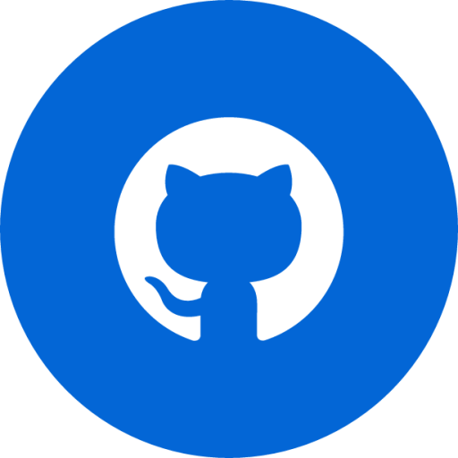
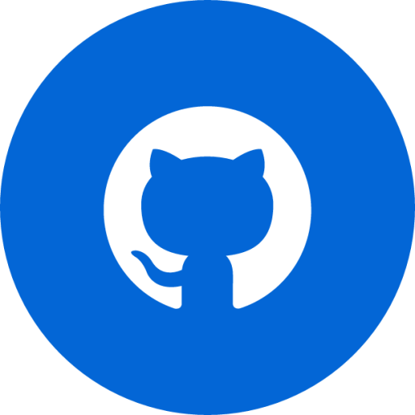

Eduardo Ungaratto
Graduado em Analise de Sistemas pela Unisinos, busca manter-se atualizado em sua area de interesse, atraves de leituras tecnicas e cursos extensionistas. Sua trajetoria profissional com Tecnologia da Informacao iniciou em 2011, durante este periodo atuou em diversas areas do setor, sua area atual de atuacao e o desenvolvimento de software em servidores em nuvem, popularmente conhecido como backend.
Area de interesse: Desenvolvimento de Software em Servidores, Arquitetura de Software e Design de Software


 
